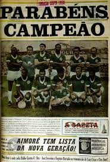
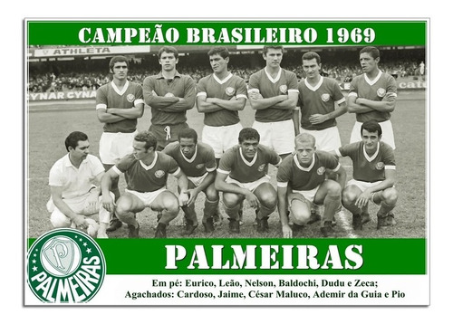
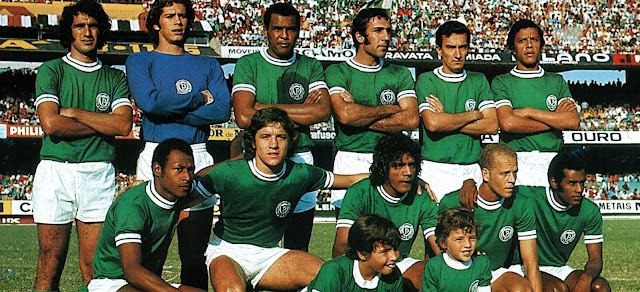
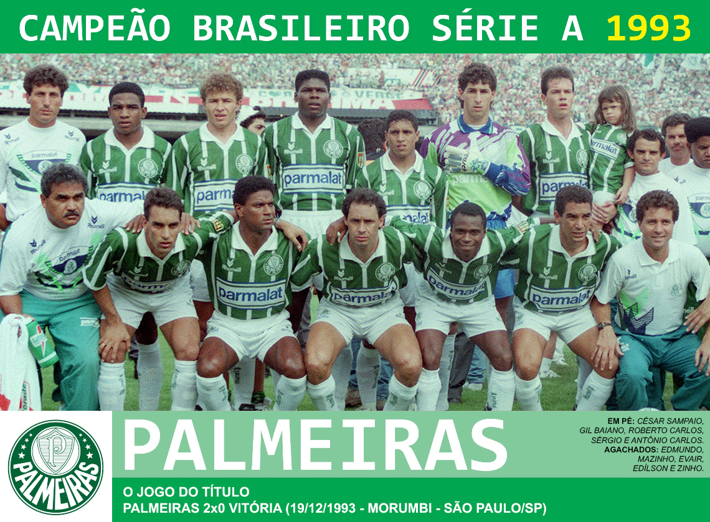
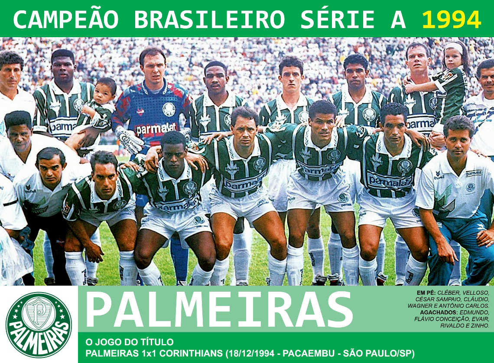
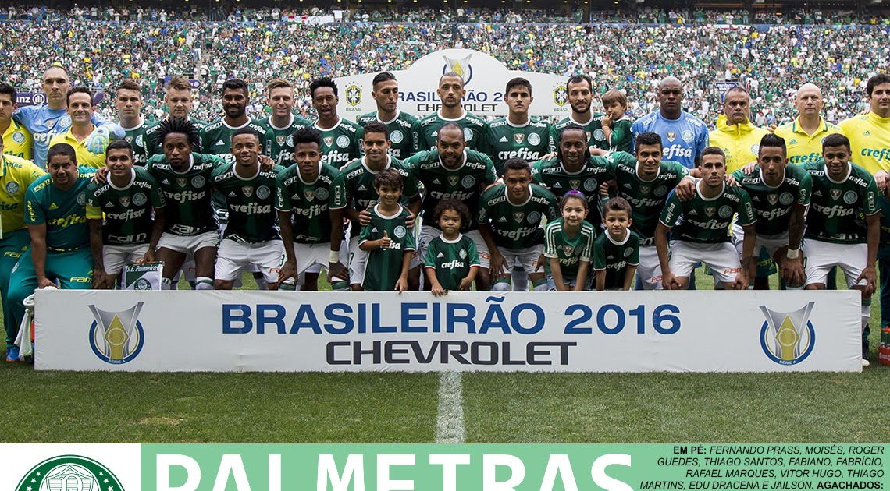
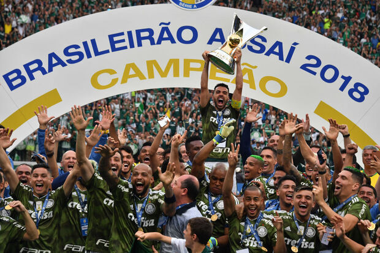

1960
O Campeonato Brasileiro de Futebol de 1960, originalmente denominado Taça Brasil pela CBD, foi a segunda edição do Campeonato Brasileiro. O Palmeiras sagrou-se campeão, vencendo o Fluminense em uma das semifinais, ganhando um e empatando o outro jogo; chegou a final e venceu os dois jogos contra o Fortaleza; faturando seu primeiro título brasileiro da história.[1][2][3] Esta edição contou com a participação de dezessete campeões estaduais, sendo que os campeões de São Paulo e Pernambuco, estados finalistas do Campeonato Brasileiro de Seleções Estaduais de 1959, já entravam na fase final.[4][5] Esta foi a primeira edição, a classificar seu campeão para a disputa do campeonato nacional do ano seguinte.[6] Apesar de sua importância, e de seu vencedor ser considerado o campeão brasileiro já na época de sua disputa,[7][8][9] somente em dezembro de 2010 que o torneio foi reconhecido oficialmente pela CBF como o Campeonato Brasileiro de Futebol de 1960.[10]
1967
O Campeonato Brasileiro de Futebol de 1967, originalmente denominado Torneio Roberto Gomes Pedrosa, foi a nona edição do Campeonato Brasileiro e foi vencido pelo Palmeiras, conquistando assim o título de campeão brasileiro de futebol de 1967,[1][2] título compartilhado oficialmente pela CBF com o próprio Palmeiras, que também venceu a penúltima edição da Taça Brasil, realizada no mesmo ano.[3]
Organizado ainda pelas federações Paulista e Carioca, o Torneio Roberto Gomes Pedrosa de 1967 foi o resultado da ampliação do Torneio Rio-São Paulo, incrementado com clubes de Minas Gerais, Rio Grande do Sul e Paraná, ou seja, transformando-a na primeira grande competição não disputada em sistema de mata-matas, como as edições da Taça Brasil, e que reuniu mais de dois estados, tornando-se também na primeira competição a englobar os principais clubes do país[4][5] e também a primeira a alcançar uma fórmula vencedora e lucrativa, agradando aos seus clubes participantes, dirigentes e torcedores.[6] Esta edição contou com a participação de quinze clubes representando cinco Estados. São Paulo foi representado por cinco equipes (Corinthians, Palmeiras, Portuguesa, Santos e São Paulo), a Guanabara também por cinco (Bangu, Botafogo, Flamengo, Fluminense e Vasco da Gama), o Rio Grande do Sul por duas (Grêmio e Internacional), assim como Minas Gerais (Atlético Mineiro e Cruzeiro) e o Paraná com uma (Ferroviário).[7][8][9] Os clubes classificados para o quadrangular decisivo foram Palmeiras, Corinthians, Internacional e Grêmio. Com duas vitórias e três empates, o Palmeiras chegou à última rodada precisando apenas de um empate no Pacaembu, mas a equipe não se contentou apenas com a igualdade e venceu o Grêmio por 2 a 1, sagrando-se campeão.[10] Este título representa uma das primeiras conquistas no âmbito nacional do time que ficou conhecido como Academia de Futebol do Palmeiras, conjunto com uma base sólida formado por atletas consagrados como Djalma Santos, Minuca, Ferrari, Dudu, Ademir da Guia, Servílio e César Maluco, time que jogava bonito, encantando não só os palmeirenses, mas muitos apaixonados pelo esporte.
Em 2010 o torneio foi reconhecido pela CBF como um dos dois Campeonatos Brasileiros de Futebol de 1967, atribuindo o título de campeão brasileiro ao Palmeiras,[11] exatamente como fazia em seus boletins oficiais entre 1971 e 1975,[12][13][14][15][16][17][18] excluindo esta informação a partir do boletim de 1976.
Taça Brasil 1967
O Campeonato Brasileiro de Futebol de 1967, originalmente denominado Taça Brasil pela CBD, foi a décima edição do Campeonato Brasileiro e foi vencido pelo Palmeiras, conquistando assim o seu terceiro título de campeão brasileiro.[1][2] Título este que é compartilhado oficialmente pela CBF com o próprio Palmeiras, que também venceu o Torneio Roberto Gomes Pedrosa de 1967. O clube sagrou-se campeão após vencer dois dos três jogos das finais contra o Náutico.[3][4] O jogo decisivo, que contou com o placar de 2 a 0 para a equipe paulista, foi disputado no Maracanã.[5] Com o triunfo nesta edição, o alviverde paulista se sagrou tricampeão brasileiro, pois neste mesmo ano de 1967 conquistou também o Torneio Roberto Gomes Pedrosa, com o clube paulista já tendo vencido em 1960 a segunda edição da Taça Brasil. A conquista deste terceiro título nacional foi marcante para a consolidação da Primeira Academia de Futebol do Palmeiras como um dos melhores times da história. Esta edição contou com a participação de vinte e um clubes. Devido o Cruzeiro ter classificado-se para a disputa desta edição por ser o então atual campeão brasileiro e, como a equipe também conquistou o Campeonato Mineiro de 1966, o Atlético Mineiro, vice-campeão mineiro, acabou ficando com a vaga destinada ao clube campeão do Estado de Minas Gerais. O Palmeiras, ao lado do vice-campeão Náutico, foram os dois representantes brasileiros na Taça Libertadores de 1968.[6] Apesar de sua importância, e de seu vencedor ser considerado o campeão brasileiro já na época de sua disputa,[7][8][9] somente em 2010 que o torneio foi reconhecido oficialmente pela CBF como um dos dois Campeonatos Brasileiros de Futebol de 1967.[10]
1969
O Campeonato Brasileiro de Futebol de 1969, originalmente denominado Taça de Prata pela CBD[1] e também conhecido por Torneio Roberto Gomes Pedrosa, foi a décima terceira edição do Campeonato Brasileiro e foi vencido pelo Palmeiras, conquistando assim o seu quarto título de campeão brasileiro. Assim como na edição anterior a competição foi organizada pela Confederação Brasileira de Desportos (CBD, atual CBF). Com a extinção da Taça Brasil, já em 1969 a Taça de Prata, passou a ser a única competição nacional de clubes de futebol que concedia o título de campeão brasileiro e a mais importante competição de futebol do Brasil. Esta edição, assim como a anterior, indicaria os dois representantes da CBD na Taça Libertadores da América. No entanto, por desentendimentos entre as confederações Brasileira (CBD) e Sul-Americana (CONMEBOL), o Brasil terminou não participando também da Libertadores de 1970, como protesto da entidade brasileira contra as mudanças das regras da competição.[2] Nesta edição, a CBD manteve o número de dezessete participantes e também o de sete estados, mas fez três alterações nos clubes convidados: o America, terceiro colocado no Campeonato Carioca de 1969, substituiu o Bangu, sexto colocado, como quinto representante carioca, enquanto os estados do Paraná e Pernambuco foram representados por seus campeões, Coritiba e Santa Cruz. Classificaram-se para a fase final os paulistas Corinthians e Palmeiras (como em 1967), além de Botafogo e Cruzeiro.[3][4][5]
.jpg)
1972
O Campeonato Brasileiro de Futebol de 1972, originalmente denominado Campeonato Nacional de Clubes pela CBD, foi a décima sexta edição do Campeonato Brasileiro. A competição foi vencida pelo Palmeiras,[1] na época conhecido como "A Academia",[2] conquistando assim o seu quinto título de campeão brasileiro.[3]
1973
O Campeonato Brasileiro de Futebol de 1973, originalmente denominado Campeonato Nacional de Clubes pela CBD, foi a décima sétima edição do Campeonato Brasileiro e teve um bicampeão: o Palmeiras,[1] cujo elenco teve poucas mudanças em relação à "Academia"[2] do ano anterior.[3]
1993
O Campeonato Brasileiro de Futebol de 1993 foi a trigésima sétima edição do Campeonato Brasileiro e foi o sétimo vencido pelo Palmeiras, que não era campeão havia exatos 20 anos. As finais foram realizadas contra o Vitória, em dois jogos que contaram com a vitória da equipe paulistana, por 1 a 0, em Salvador, no Estádio da Fonte Nova, e por 2 a 0, no Estádio do Morumbi, na capital paulista.[1]
1994
O Campeonato Brasileiro de Futebol de 1994 foi a trigésima oitava edição do Campeonato Brasileiro e foi novamente vencido pelo Palmeiras, que conquistou o seu oitavo título e mais uma vez como bicampeão, repetindo o feito de 1972 e 1973. O confronto final, entre Palmeiras e Corinthians, foi o quinto entre duas equipes paulistas, repetindo 1978, 1986, 1990 e 1991. Os arquirrivais disputaram a final em dois jogos no Estádio do Pacaembu. Na primeira partida, disputada no dia 15 de dezembro, o Palmeiras derrotou o Corinthians por 3 a 1, com grande exibição do meia Rivaldo, que marcou dois dos três gols palmeirenses. Com a abertura de grande vantagem sobre o time alvinegro, o Palmeiras entrou tranquilo na segunda partida e chegou ao título no dia 18 de dezembro com um empate por 1 a 1 contra o Corinthians.[1]
2016
A Série A do Campeonato Brasileiro de Futebol de 2016, oficialmente Brasileirão Chevrolet 2016 – Série A por motivos de patrocínio,[2] foi a 60ª edição da principal divisão do futebol brasileiro. A disputa teve o mesmo regulamento dos anos anteriores, quando foi implementado o sistema de pontos corridos. Não houve pausa durante a Copa América Centenário, realizada entre 3 de junho e 26 de junho nos Estados Unidos, tampouco durante os Jogos Olímpicos de Verão de 2016, que foram realizados entre 3 e 21 de agosto, e os Jogos Paralímpicos de Verão de 2016, que aconteceram entre 7 e 18 de setembro.[3] O título brasileiro foi definido com uma rodada de antecedência, quando o Palmeiras foi declarado campeão ao derrotar a Chapecoense por 1–0, no Allianz Parque. Foi a nona conquista da história do clube, que se tornou o maior campeão brasileiro até então, superando o Santos.[4][5] Este jogo também ficou marcado por ter sido a última partida da Chapecoense antes do acidente de avião que levaria o time catarinense a Medellín para a decisão da Copa Sul-Americana. A tragédia deixou 71 mortos, dentre eles dezenove atletas e dezesseis membros da equipe técnica da Chapecoense, além de oito integrantes da diretoria, 21 jornalistas e sete tripulantes.[6][7] Por conta do desastre, a CBF decretou luto por uma semana e adiou a última rodada da competição.[1] Além do campeão Palmeiras, Santos, Flamengo e Atlético Mineiro também se classificaram diretamente à fase de grupos da Copa Libertadores da América de 2017, assim como a Chapecoense, declarada campeã da Copa Sul-Americana, e o Grêmio, vencedor da Copa do Brasil.[8][9][10][11][12] Já Botafogo e Atlético Paranaense, quinto e sexto colocados respectivamente, se classificaram para a segunda fase do torneio continental.[13][14]
2018
A Série A do Campeonato Brasileiro de Futebol de 2018, oficialmente Brasileirão Assaí – Série A 2018 por motivos de patrocínio,[1] foi a 62.ª edição da principal divisão do futebol brasileiro. A disputa teve o mesmo regulamento dos anos anteriores, quando foi implementado o sistema de pontos corridos. Houve pausa durante a Copa do Mundo de 2018, realizada entre 14 de junho e 15 de julho, na Rússia.[2][3] Esta foi a edição com mais clubes nordestinos na história dos pontos corridos, com quatro representantes: Bahia, Ceará, Sport e Vitória. Desde 2001, quando o campeonato ainda era disputado em sistema misto e contava com 28 participantes, o Nordeste não tinha quatro clubes na elite. Por sua vez, o Sudeste foi a região com mais representantes, onze no total, enquanto o Sul contou com cinco times na competição.[4] O título foi definido na penúltima rodada: o Palmeiras conquistou o seu décimo título brasileiro,[5] após vencer o Vasco da Gama em São Januário, por 1–0,[6] isolando-se no posto de maior campeão nacional do futebol brasileiro.[7] Além do campeão, Flamengo, Internacional e Grêmio se classificaram diretamente à fase de grupos da Copa Libertadores da América de 2019, além do Cruzeiro, campeão da Copa do Brasil.[8][9][10][11] Após o término do campeonato, o Atlético Paranaense conquistou a Copa Sul-Americana e também se garantiu na fase de grupos da Libertadores.[12] Já São Paulo e Atlético Mineiro, quinto e sexto colocados respectivamente, se classificaram para a segunda fase do torneio continental.[13][14]
voltar para pagina inicial